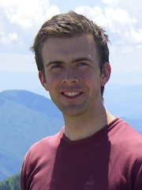
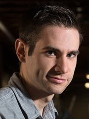
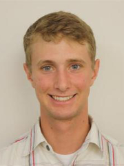
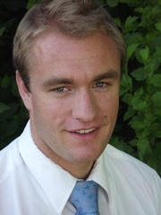

Andrew Ning is interested in the complex tradeoffs that occur in engineering design. The design of wind energy and flight systems involves strong interactions across multiple disciplines. Optimization is a useful tool in exploring these design decisions. In addition to design applications, he is interested in developing fundamental algorithms and methodologies for efficient aerodynamic analysis and optimization.
Dr. Ning received his Ph.D. and M.S. degrees from Stanford University in the Aircraft Aerodynamics and Design Group. After graduation he worked at the National Renewable Energy Laboratory on wind turbine aeroelastic analysis and optimization. He loves engaging in ideas and learning with the excellent students and faculty at BYU. Outside of engineering he enjoys mountain biking, cycling, hiking, soccer, basketball, and reading.
Eric Tingey is from Meridian, Idaho and enjoys playing the piano, skiing, and learning about languages and cultures. He enjoys engineering and has always been fascinated with aviation and aerospace. Eric is researching vertical-axis wind turbines (VAWTs) with a focus on how their wakes propagate downstream.

Jared Thomas is working towards an M.S. degree in mechanical engineering and an MBA. He is from Cottonwood Heights, Utah. Jared is currently investigating wind farm layout optimization.

Ryan Barrett is working towards an M.S. degree in mechanical engineering and an MBA. He is from Salt Lake City, Utah and is researching wind turbine blade optimization.

Kevin Moore is fascinated with flight and aerodynamics and is working to make his dreams reality through advanced experimental and computational techniques. Currently he is investigating vertical axis wind turbine aerodynamics and design with smaller projects relating to unmanned aerial vehicles. In his spare time, Kevin enjoys snow and water skiing as well as mountaineering.

Mikkel Unrau is from Orem, Utah and has an interest in aerospace engineering. He is currently researching improving existing optimization techniques with applications in aerospace. In his free time he enjoys reading, being outdoors, and flying RC planes.